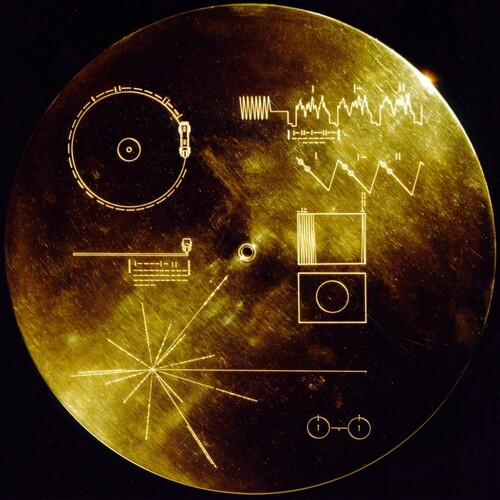

In The Year 3000

In The Year 3000
If you like adventure,
eventually you will ask yourself about the big future.
Will we be able to ask Artificial Intelligence,
to build better artificial intelligence, or will their thoughts have limits too?
What will it be like when scientists cure aging,
how will that change Humanity, will we immateriality take to the stars?
Will we Terraform nearby planets,
or will it be genetic engineering that will allow people to settle there.
One of the most shocking realizations is that the future humans must leave Earth,
because of the sun, or ecosystem collapse.
It is fair to say, that the future humans area Spacefaring Species,
they have no choice[1].
And hen there is something else, if we have four billions years left on earth,
think about how evolution transformed the Majestic Little Shrew into a Human.
It only took 65 million years, to go from mouse to great ape,
and we have four billion years.
We will look as different from who we are today,
as a chicken is from a dinosaur, as a mouse is from an ape.
Not to mention science,
and all those other inventions.
Seth Shostak[2] thinks that maybe advanced species load themselves up into computer programs[3],
after billions of years of dealing with artificial intelligence, we all get really good at computers.
Chances are that the future humans have cybernetic enhancements,
that some portion of the future brain, is stored on a chip.
It will happen, first to cure diseases, then to enhance clarity of thought,
and quality of evening poetry - perhaps radio waves will be how we travel between near by stars.
If feels weird to talk about things like that,
doesn't it?
We are used to thinking of ourselves as ordinary,
of our school, legal and political systems as something that we are improving, and it used to be a lot worse.
But a lot of that comes from,
the comfort we take in our routines and so called ordinary lives.
But to call a Human, ordinary,
is an oxymoron, a mistake, an error.
We are thinking beings,
all extremely intelligent, tough like nails - or yes we are.
We are not ordinary,
there is nothing ordinary about your mind.
It feels strange to think about futuristic things,
because we aren't of the culture to consider future enough[4].
But cure aging even if just with cry sleep,
where we can wait out the next hundred years as in just leap into the future, where cure will be available, and our minds will alter.
Perhaps the biggest realization is that the difference between the modern human the beings we were ten thousand years ago,
is Knowledge alone, that saying that Knowledge is Power, is an understatement, knowledge is how Humanity progresses forward.
In The Year 3000 References
[1]: https://www.youtube.com/watch?v=gaOPDk8Xbgw
[2]: https://www.youtube.com/watch?v=_udY35m3SdE
[3]: https://www.youtube.com/watch?v=xvm7dB0mOic
[4]: https://www.youtube.com/watch?v=15axMs0yw8Q